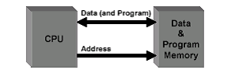

The Von Neumann Architecture
VON NEUMANN ARCHITECTURE
Most of today’s computer designs are based on concepts developed by John von Neumann referred to as the VON NEUMANN ARCHITECTURE. Von Neumann proposed that there should be a unit performing arithmetic and logical operation on the data. This unit is termed as Arithmetic Logic (ALU). One of the ways to provide instruction to such computer will be by connecting various logic components in such a fashion, that they produce the desired output for a given set of inputs. The process of connecting various logic components in specific configuration to achieve desired results is called Programming. This programming since is achieved by providing instruction within hardware by various connections is termed as Hardwired. But this is a very inflexible process of programming. Let us have a general configuration for arithmetic and logical functions. In such a case there is a need of a control signal, which directs the ALU to perform a specific arithmetic or logic function on the data. Therefore, in such a system, by changing the control signal the desired function can be performed on data. Representation of facts, concepts, or instructions in a formalized manner suitable for communication, interpretation, processed by humans or by automatic means. Any representations such as characters or analog quantities to which meaning is or might be assigned To Any operation, which needs to be performed on the data, then can be obtained by providing a set of control signals. This, for a new operation one only needs to change the set of control signals. But, how can these control signals by supplied?
Let us try to answer this from the definition of a program. A program consists of a sequence of steps. Each of these steps, require certain arithmetic or logical or input/output operation to be performed on data. Therefore, each step may require a new set of control signals. Is it possible for us to provide a unique code for each set of control signals? Well the answer is yes. But what do we do with these codes? What can add a hardware segment, which accepts a code and generates termed as Control Unit (CU). This, a program now consists of a sequence of codes. This machine is quite flexible, as we only need to provide a new sequence of codes for a new program. Each code is, in effect, and instruction, for the computer the hardware interprets each of these instructions and generates respective control signals, The Arithmetic Logic Unit (ALU) and the Control Unit (CU) together are termed as the Central Processing Unit (CPU). The CPU is the most important component of a computer’s hardware. The ALU performs the arithmetic operations such as addition, subtraction, multiplication and division, and the logical operations such as: “Is A =B?” (Where A and B are both numeric and alphanumeric data), “Is a given character equal to M (for male) or F (for female)?” The control unit interprets instructions and produces the respective control signals.
All the arithmetic and logical Operations are performed in the CPU in special storage areas called registers. ‘The size of the register is one of the important considerations in determining the processing capabilities of the CPU. Register size refers to the amount of information that can be held in a register at a time for processing. The larger the register size, the faster may be the speed o processing. A CPU’s processing power is measured in Million Instructions per Second (MIPS). The performance of the CPU was measured in milliseconds (one thousand of a second) on the first generation computers, in microseconds (one millionth of a second) on second-generation computers, and is expected to be measured in Pico-seconds (one 1000th of a nano-second) in the later generations. How can the instruction and data be put into the computers? An external environment supplies the instruction and data, therefore, an input module is needed. The main responsibility of input module will be to put the data in the form of signals that can be recognized by the system. Similarly, we need another component, which will report the results in the results in proper format and form. This component is called output module. These components are referred together as input/output (I/O) components. In addition, to transfer the information, the computer system internally needs the system interconnections. Most common input/output devices are keyboard, monitor and printer, and the most common interconnection structure is the Bus structure.
Are these two components sufficient for a working computer? No, because input devices can bring instructions or data only sequentially and a program may not be executed sequentially as jump instructions are normally encountered in programming. In addition, more than one data elements may be required at a time. Therefore, a temporary storage area is needed in a computer to store temporarily the instructions and the data. This component is referred to as memory. It was pointed out by von-Neumann that the same memory can be used or storing data and instructions. In such cases the data can be treated as data on which processing can be performed, while instructions can be treated as data, which can be used for the generation of control signals. The memory unit stores all the information in a group of memory cells, also called memory locations, as binary digits. Each memory location has a unique address and can be addressed independently. The contents of the desired memory locations are provided to the central processing unit by referring to the address of the memory location. The amount of information that can be held in the main memory is known as memory capacity. The capacity of the main memory s measured in Kilo Bytes (KB) or Mega Bytes (B). One-kilo byte stands for 210 bytes, which are 1024 bytes (or approximately 1000 bytes). A megabyte stands for 220 bytes, which is approximately little over one million bytes. When 64-bit CPU's become common memory will start to be spoken about in terabytes, petabytes, and Exabyte’s.
Summary of the key features of a von Neumann machine.
• The hardware of the von Neumann machine consists of a CPU, which includes an ALU and CU.
• A main memory system
• An Input/output system
• The von Neumann machine uses stored program concept, e.g., the program and data are stored in the same memory unit. The computers prior to this idea used Paper Name: Computer Organization and Architecture to store programs and data on separate memories. Entering and modifying these programs were very difficult as they were entered manually by setting switches and plugging and unplugging.
• Each location of the memory of von Neumann machine can be addressed independently.
• Execution of instructions in von Neumann machine is carried out in a sequential fashion (unless explicitly altered by the program itself) from one instruction to the next. The following figure shows the basic structure of von Neumann machine. A von Neumann machine has only a single path between the main memory and control unit (CU). This feature/ constraint is refereed to as von Neumann bottleneck. Several other architectures have been suggested for modern computers
von Neumann Machine

• Attributed to John von Neumann
• Treats Program and Data equally
• One port to Memory. Simplified Hardware
• "von Neumann Bottleneck" (rate at which data and program can get into the
CPU is limited by the bandwidth of the interconnect)